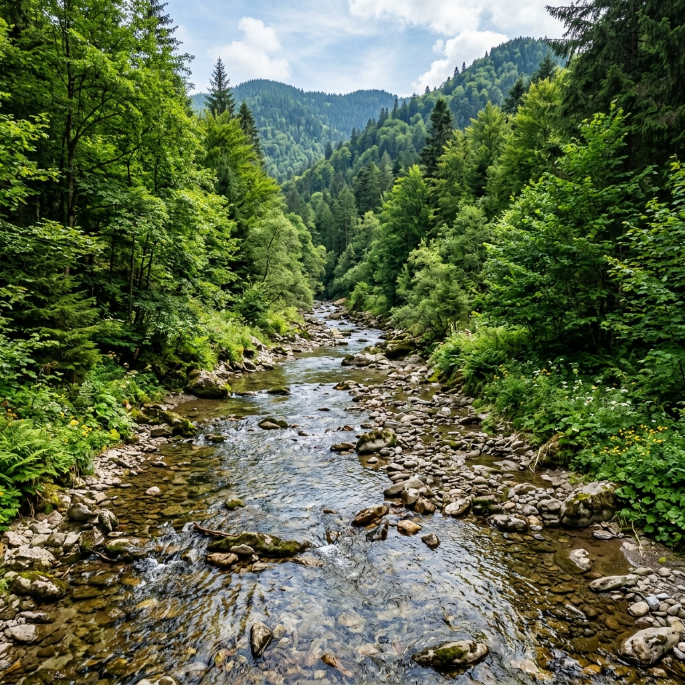
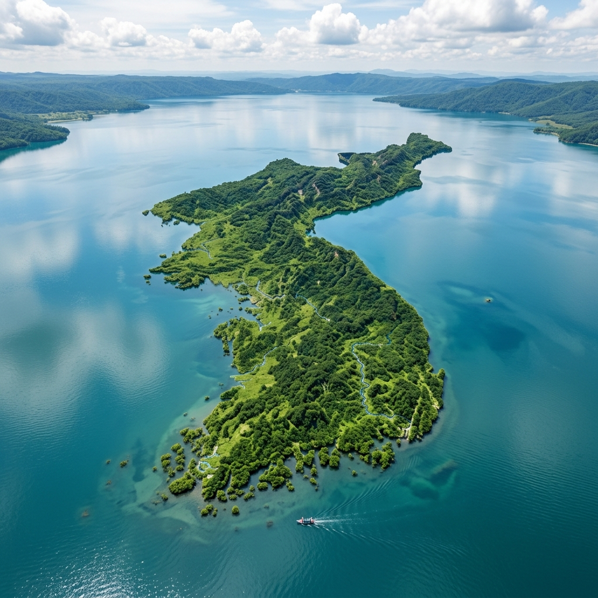
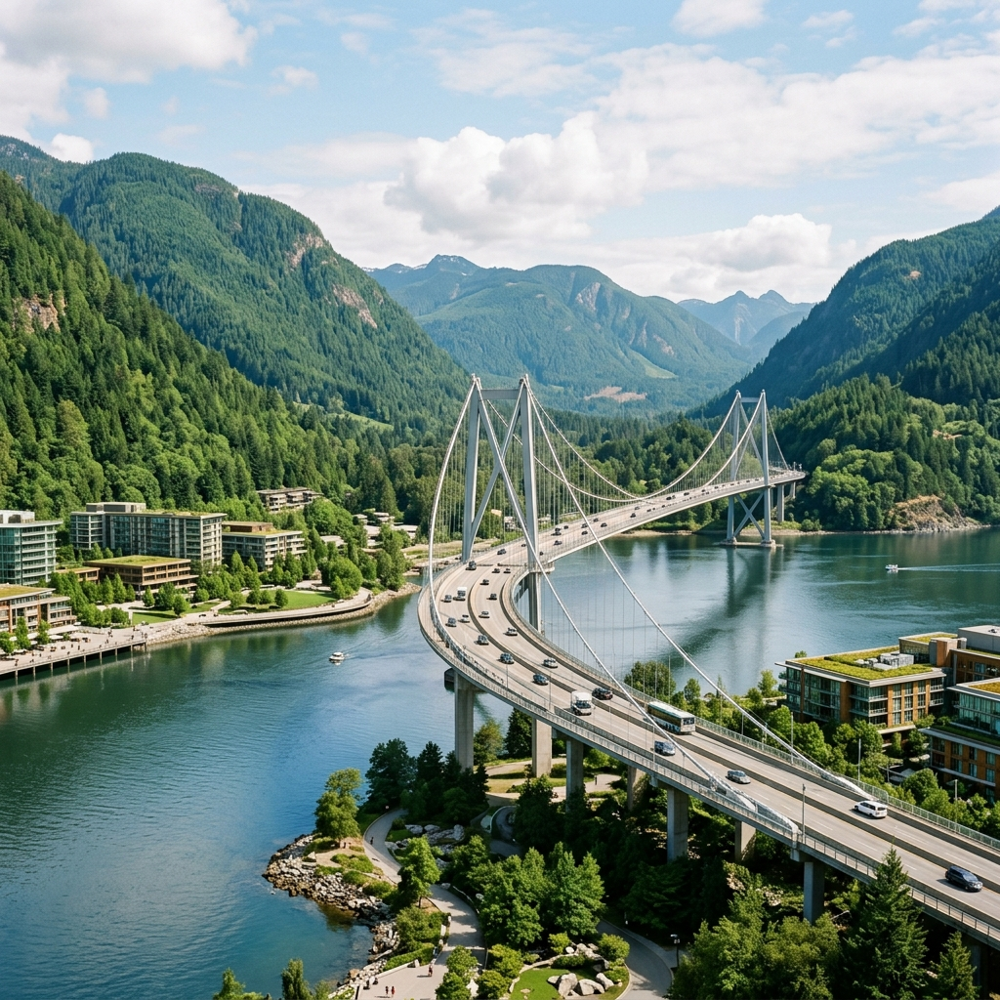
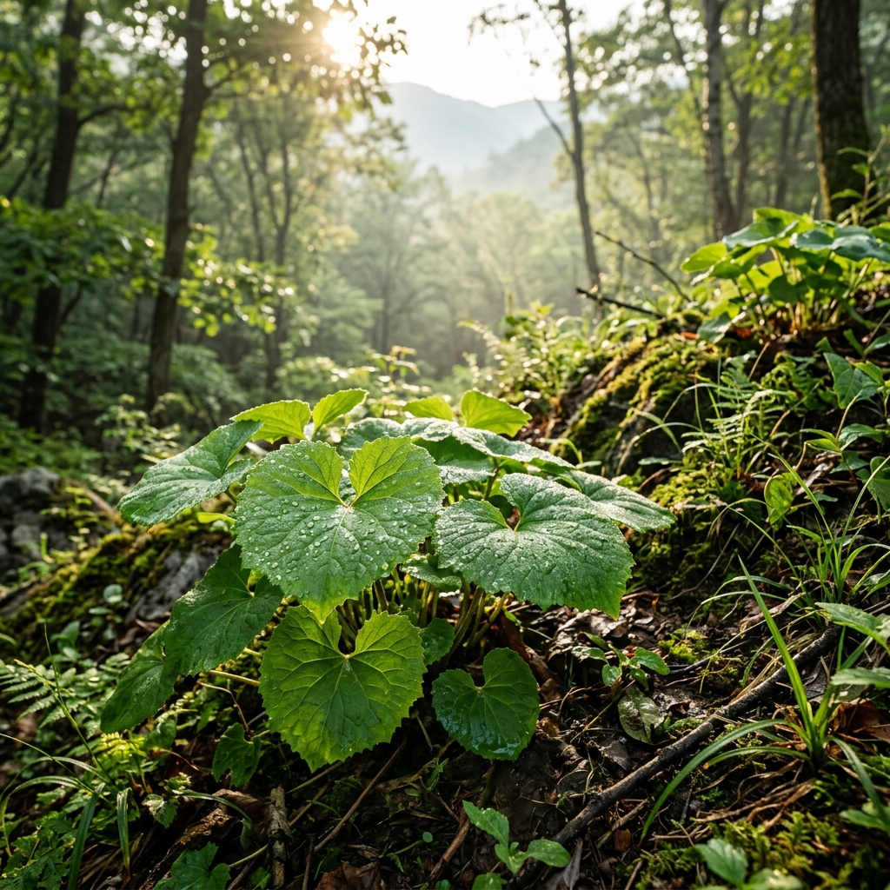

자연과 사람이 하나되는 곳
발길 닿는 곳마다 그림이 되는 양구의 매력을 느껴보세요.
청정 자연
맑은 공기와 훼손되지 않은 원시 자연을 그대로 간직하고 있습니다.
평화의 상징
분단의 아픔을 넘어 평화와 희망을 이야기하는 치유의 공간입니다.
예술과 문화
거장의 숨결이 살아있는 미술관과 특별한 박물관이 기다립니다.
양구 관광 홍보영상
자연과 평화의 중심, 양구의 아름다운 모습을 영상으로 먼저 만나보세요.
자연 / 생태 관광지

두타연
민통선 내에 위치한 천혜의 비경. 반세기 동안 사람의 발길이 닿지 않은 맑은 계곡과 울창한 숲을 만날 수 있습니다.

한반도섬
파로호 인공습지에 한반도 모양으로 조성된 인공섬. 아름다운 수변 산책로와 다양한 수상 레포츠를 즐길 수 있습니다.

상무룡출렁다리
파로호의 수려한 경관을 가로지르는 웅장한 출렁다리. 푸른 호수 위를 걷는 듯한 짜릿함과 아름다운 자연을 동시에 만끽할 수 있습니다.
청정 자연이 키운 초록 보물, 양구 곰취
맑은 공기와 해발 800m 이상 고산지대의 이슬을 먹고 자란 대한민국 대표 웰빙 특산물

쌉싸름한 향 끝에 머무는 깊은 단맛
양구군 대암산과 펀치볼 등 해발 800m 이상의 깨끗한 고산지대에서 자란 곰취는 맛과 향이 매우 특별합니다.
-
천혜의 환경 큰 일교차와 비옥한 토양, 깨끗한 계곡수 덕분에 잎이 연하고 부드러우며 특유의 향이 오랫동안 지속됩니다.
-
풍부한 영양소 비타민 A와 C, 칼슘, 식이섬유가 풍부하여 면역력 증진, 피로회복, 항산화 작용에 우수한 효능을 자랑합니다.
-
지리적 표시제 등록 국가가 그 품질과 역사적 가치를 보증하는 대표적인 우수 농산물 인증을 획득하였습니다.
초록빛 봄 향기 가득, 양구 곰취축제
매년 봄(5월경), 양구읍 레포츠공원 일대에서 향긋한 곰취의 계절을 축하하는 축제가 열립니다. 온 가족이 함께 싱그러운 양구의 봄을 만끽해 보세요.
-
직접 체험하는 곰취 채취 청정 재배지에서 파릇파릇 돋아난 신선한 곰취를 직접 손으로 수확해 보는 잊지 못할 경험을 선사합니다.
-
다채로운 문화 체험 행사 전통 곰취 떡메치기, 곰취 쌈 시식회, 요리 경연대회, 초청 가수 공연 등 온 가족이 참여할 수 있는 풍성한 축제 프로그램이 펼쳐집니다.
-
특산물 상설 마켓 운영 밭에서 갓 따온 명품 곰취와 양구의 친환경 농특산물을 산지 직송의 착한 가격으로 안전하게 구매할 수 있습니다.
입안 가득 퍼지는 자연의 웰빙 레시피
쌉싸름하면서도 향긋한 맛이 입맛을 돋우는 곰취는 어떤 식탁에서도 주인공이 되는 만능 웰빙 식재료입니다.
-
곰취 쌈밥 살짝 데친 곰취 잎에 갓 지은 밥과 고소한 양념 쌈장을 얹어 먹는 대표 요리로, 쌉싸름함과 밥의 단맛이 완벽한 조화를 이룹니다.
-
곰취 장아찌 간장, 식초, 매실청 등을 달여 붓고 숙성시킨 밑반찬입니다. 삼겹살 등 육류와 곁들이면 기름진 맛을 싹 잡아주어 사계절 내내 사랑받습니다.
-
곰취전 잘게 썬 곰취를 바삭한 밀가루 반죽에 섞어 부쳐내는 전 요리입니다. 뜨거운 열기 속에 한층 짙어지는 향긋함이 바삭한 식감과 매력적으로 어우러집니다.
여행 추천 코스
양구의 매력을 100% 즐길 수 있는 맞춤형 여행 코스와 동선을 확인해 보세요.

힐링 산책 코스
-
1
박수근미술관 거장의 숨결을 느끼는 산책
-
2
양구중앙시장 양구의 정겨운 맛과 멋
-
3
한반도섬 수변 산책로와 파로호의 절경
-
4
양구수목원 푸른 자연 속 완벽한 힐링
자연 생태 코스
-
1
양구백자박물관 단아한 조선백자의 향기
-
2
두타연 원시 자연이 숨쉬는 생태계의 보고
-
3
국토정중앙천문대 한반도 정중앙에서 보는 밤하늘
1박 2일 종합 코스
-
1
두타연 자연과 역사가 공존하는 비경 탐방
-
2
박수근미술관 예술적 감성을 채우는 오후
-
3
양구수목원 초록빛 자연 속 산림욕
-
4
국토정중앙천문대 별과 함께하는 낭만적인 밤
🚌 뚜벅이도 걱정 없이, 편안한 양구 시티투어
전문 문화관광해설사와 함께 양구의 비경을 편안하게 즐겨보세요.
- 운행 일정: 4월 ~ 11월 (매주 금, 토, 일)
- 주요 코스: 금(방산나들이), 토(힐링산책), 일(해안 DMZ 트레킹)
- 문의 전화: 033-253-4000
문화와 예술의
향기를 따라
양구는 단순한 자연 관광지를 넘어, 깊이 있는 역사와 예술을 체험할 수 있는 다채로운 문화 공간을 품고 있습니다.
- 박수근 미술관 가장 한국적인 화가 박수근 선생의 작품 세계와 아름다운 건축미
- 국토정중앙천문대 우리나라의 정중앙에서 관측하는 신비로운 밤하늘의 별자리
- 양구백자박물관 조선백자의 맥을 잇는 양구 백자의 우수성과 역사

전시관 운영
양구 관광지도
한반도의 정중앙, 양구군의 주요 관광 명소를 한눈에 확인해 보세요. (지도를 클릭하면 크게 볼 수 있습니다)
양구 모범음식점
양구군이 인증한 깨끗하고 맛있는 대표 모범음식점 18선입니다.
오시는 길
한반도의 정중앙, 양구군 중심지로 오시는 길을 안내해 드립니다.
양구 관광 관련 사이트
더 다양하고 자세한 양구 여행 정보를 원하신다면 아래 공식 사이트들을 방문해 보세요.


마음과 마음을 잇는, 양구 문의처
청정 양구 관광에 대해 궁금하신 점이 있으시다면 언제든 편하게 남겨주세요.
YANGGU TOUR
한반도의 정중앙, 자연과 평화의 도시 양구